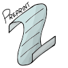
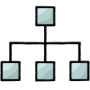

Alexander J. Schiller, PhD
About this document
This is a living document I created to document projects and stuff that makes me proud. I periodically update the numbers,
statistics, and information. I am also still backfilling old content. All images were created by me. Last updated 08-07-18.
At a glance
2941 contributions on
GitHub from 2012 to 2018
30 lab and online experiments designed, conducted, and analyzed
50 students taught R, Stats, and Research Methods
Research (Cognitive Psychology)
9 years
3 published articles and book chapters
6 talks presented
14 posters presented at conferences
Managing and Mentoring (Students, Software Developers)
10 years
4 software developers managed/mentored as a
Tech Lead and
Software Developer 30 research assistants managed/mentored as a
Graduate Student and
Lab Manager60 students mentored as a
Resident Advisor
Technical Experience
Center for Open Science
The Center for Open Science is a non-profit startup with the goal of increasing openness, integrity, and reproducibility of research.
I started at the Center as an intern in 2013 while working on my PhD. I signed on as a developer
in 2016 and am now a tech lead in charge of three services: Preprints, Registries, and Peer Review.
Tech Lead (Center for Open Science)
Jan 2018 to Present
- Coordinate, review, and release all code from 165 pull requests across 4 git repos (to date)
- Mentor and manage the agile open source work of 3 software developers
- Create new front-end features using EmberJS and ECMAScript 6
- Evaluate design docs, weigh in on UX design, and assist in sprint planning

Product Highlight: OSFPreprints
The Center for Open Science current hosts 22 preprint providers. Providers are primarily topic (e.g., Psychology, PsyArXiv, 2277 preprints) or region
(e.g., Indonesia, INA-Rxiv, 3214 preprints) focused. My current work focuses on building out features to improve impact, sharing, and useability while
also doing application maintenance. One recent major maintenance task involved upgrading to Ember 2.18 (from 2.11) and adding stricter linting.
These upgrades touched 1/4 of the preprint repo's code and contained over 6000 lines of modified code.
Software Developer (Center for Open Science)
Sept 2016 to Jan 2018
- Fixed emergent high priority user-reported issues
- Created new user interfaces and brought polish to large, ailing features that other engineers avoided
- Managed the work of two interns improving quality and speed of 2400 API tests
- In raw numbers: I wrote 139 feature/bug fixes, 54 hotfixes
- Additionally, I reviewed 130 pull requests, and created 155 Jira tickets for issues (second only to QA)

Project Highlight: Open Science Framework Sitemap
One fun project I enjoyed was writing a
custom sitemap generator for the Open Science Framework.
We required some custom site routing that made out of the box solutions less than optimal. In production, the script runs nightly on a celery beat
job and ships the data to an Amazon S3 bucket (using boto3). The sitemap was needed to allow Google Scholar to index our preprints.
One interesting side effect was that the sitemap script also served as a coal mine canary and alerted us on more than one occasion to issues in the production database.
Software Developer Intern (Center for Open Science)
Oct 2013 to May 2016
- Wrote the first version of the Modular File Renderer, a library to convert various file types to HTML
- Designed and implemented an onboarder interface that allowed users to quickly start new projects on the OSF
- Assisted in the design and prototyping of a new single page horizontal scrolling user interface
- Created a work-in-progress R package to interface with the OSF API and pull project data directly into R
- Onboarded new interns and helped them set up local development environments
- Fixed bugs and added new user facing features
Project Highlight: Modular File Renderer
My first project at the Center for Open Science was the
Modular File Renderer.
Scientists upload various file types to their projects. Some file types are trivial to render to HTML, but many require integrating with libraries or
writing custom rendering scripts. The goal of the Modular File Renderer was to write as many renderers as possible (I wrote the first 20).
The structure of the code has changed in the last few years, but I can see still bits and pieces of the original code I wrote.
Research Experience
Graduate Student - Cognitive Psychology (University of Virginia)
Lab Manager - Social Cognition and Behavior Lab (University of Virginia)
Undergraduate Student - Psychology (Western Washington University)
Other Experience
Resident Advisor (Western Washington University)
Advocacy Counselor (Domestic Violence and Sexual Assault Services)
Finish Carpenter (MGH Construction)
Inside Customer Service (Westside Building Supply)
Outside Customer Service (Westside Building Supply)
Raspberry Picker (Jake Maberry Packing)